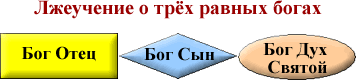
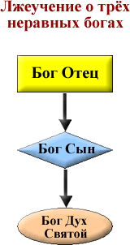
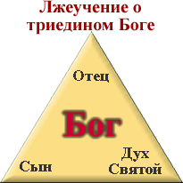

По следам дискуссий
Святая Троица
краткий конспект одноимённой дискуссии
Введение: В БИБЛИИ НЕ СУЩЕСТВУЕТ ТЕРМИНА «ТРОИЦА».
Как бы вы упорно и внимательно не читали Библию, вам не удастся в ней
обнаружить термин «Троица». Однако Священное Писание открыто
свидетельствует о том, что многие называют Святой Троицей.
Сегодня мы с вами познакомимся с библейским пониманием Троицы.
И начнём мы с ответа на вопрос, чем Троица не является.
I. ЧЕМ ТРОИЦА НЕ ЯВЛЯЕТСЯ?
1. Ложная теория №1.

Люди, верящие в эту теорию, полагают, что Троица - это три разных бога,
которые равны между собой по мудрости, силе и могуществу.

2. Ложная теория №2.
Некоторые верят в ложную теорию о трёх неравных между собой богах.
Согласно этой теории, Отец главнее и сильнее Сына, а Сын главнее и
сильнее Святого Духа.
По мнению таких людей, то, что может делать Отец, неподвластно Сыну. Но зато Сын может делать
то, что не может делать Дух.
Некоторые люди пошли дальше и выдвинули теорию, согласно которой Святой Дух вообще не является
Богом.
Очень часто Святой Дух ошибочно понимается и рассматривается людьми как
абстрактная идея о какой-то субстанции и или духовной силе, которой
обладает Бог. Люди, придерживающиеся этой теории, либо не знают, либо
забывают о том, что Святой Дух – это и есть Сам Господь Бог – Творец
всего видимого и невидимого.
3. Ложная теория №3: Лжеучение о Троице как о триедином Боге

На сегодняшний день эта теория, по нашему мнению, является самой
распространённой и самой опасной, ибо её исповедует и проповедует
большинство христианских церквей во всём мире.
Данная доктрина (учение) о Троице впервые была сформулирована на
Никейском совете в 325 г. от рождества Христа, и дополнена и
окончательно утверждена Первым Константинопольским Собором в 381 году
нашей эры. Тогда и было провозглашено, что Бог существует и являет Себя в трёх равных между
собой личностях – Отец, Сын и Святой Дух.
Всё было бы хорошо, если бы эта теория не противоречила Священному Писанию. Но об этом мы
поговорим ниже…
Давайте же рассмотрим, является ли Бог триединым.
II. ЯВЛЯЕТСЯ ЛИ БОГ ТРИЕДИНЫМ?
1. ЕДИНСТВО И УНИКАЛЬНОСТЬ БОГА.
Для того, чтобы правильно понять вопрос о Троице, нам необходимо
усвоить одну наиважнейшую истину, касающуюся сущности Господа Бога, -
Его единство.
Вот что Библия учит о ЕДИНСТВЕ Бога:
А. Бог един в количественном значении: Слово Божье призывает нас
поклоняться не нескольким богам, а ОДНОМУ единственному живому Богу!
Б. Когда в Библии говорится, что Бог един, это означает, что Он является единой и
неделимой личностью: Бог – един и неделим.
B. Когда Библия говорит, что Бог един, речь идёт не только о
количественном значении, но также об уникальности Бога: Бог уникален и
не повторим, ибо на свете нет никого, подобного Ему.
Ветхий Завет о единстве Бога: Исход. 20:2-3 "Я Господь, Бог твой, Который вывел тебя
из земли Египетской, из дома рабства; да не будет у тебя других богов пред лицем Моим".
Второзаконие 6:4-6 "Слушай,
Израиль: Господь, Бог наш, Господь един есть; люби Господа, Бога
твоего, всем сердцем твоим, и всею душею твоею и всеми силами твоими. И
да будут слова сии, которые Я заповедую тебе сегодня, в сердце твоем".
Новый Завет о единстве Бога: Марка 12:28-30 "Иисус отвечал ему: первая из всех
заповедей: слушай, Израиль! Господь Бог наш есть Господь единый".
2. БОГ: ТРИ ЛИЧНОСТИ ИЛИ ОДНА?
Сегодня многие заблуждаются, утверждая, что Бог обладает тройственной природой – то есть
является триединым: что Бог существует и являет Себя в трёх равных между собой личностях
– Отец, Сын и Святой Дух.
Данное определение НЕ является библейским по следующим причинам:
А. Триединство противоречит Библейскому учению о единстве Бога. Библия учит, что Бог
един. «Един»
– значит, обладает одной личностью, а не тремя. Учение о трёх личностях
божества подразумевает трёх богов, а не одного Бога, ибо личность – это
отдельная независимая единица сознания.
Господь Бог на протяжении всего ветхозаветного периода пытался
«вдолбить» Своему народу, что Он – един, а сегодняшнее христианство
исповедует триединого Бога. Не мудрено, что евреи с неприязнью
относятся к христианам, называя их язычниками, исповедующими
многобожие.
Б. Назвать Бога триединым, значит ограничить безграничного Бога. Тот,
кто считает Бога триединым, наверное, никогда не читал Ветхого Завета
или забыл о том, что Бог на протяжении всей истории человечества
проявлял Себя по-разному в многообразных формах. Причину, по которой
Господь являлся людям в различных образах и формах, объясняет сам Бог в
Исходе 33:20 «…потому что человек не может увидеть Меня и остаться в живых».
Приведём несколько примеров того, в каких формах и образах Господь открылся человечеству:
- В Эдемском саду Бог ходил «во время прохлады дня», так что Адам мог Его видеть и
общаться с Ним (Бытие 3:8);
- Аврааму Бог явился в образе путника (Бытие 18);
- Иакову Бог явился в образе Некто, с кем он боролся (Бытие 32:24-30);
- Моисею Бог явился в образе горящего куста (Исход 3:2);
- Израильскому народу Бог явился на горе Синай в облаке, слава же Господня была
«как огонь поядающий» (Исход 24:16-17);
- Более того, на протяжении 40 лет Бог являлся Израильскому народу днём в столпе
облачном, а ночью – в столпе огненном (Исход 13:22, Неемия 9:19);
- Господь Бог неоднократно являлся избранным в виде Ангела Господня: Гедеону
(Судей 6:11-22), родителям Самсона (Судей 13), пророку Илии (3 Царств 19:7, 4
Царств 1:3),
- Сидраху, Мисаху и Авденаго, которых царь Навуходоносор
бросил в огненную печь, Бог явился в подобии «сына Божия» (Даниил
3:49-94). Об этом засвидетельствовал сам царь Навуходоносор в Данииле 3:91-92
«Навуходоносор царь изумился, и поспешно встал, и сказал вельможам своим: не троих ли
мужей бросили мы в огонь связанными? Они в ответ сказали царю: истинно так, царь! На это он
сказал: вот, я вижу четырех мужей несвязанных, ходящих среди огня, и нет им вреда; и
вид четвертого подобен сыну Божию».
О том, что Господь на протяжении Ветхозаветной истории являл Себя людям в многообразных формах,
говорится в Послании Евреям 1:1 «Бог, многократно и многообразно
говоривший издревле отцам в пророках…». Это что касается ветхозаветного периода истории
человечества.
А как насчёт новозаветного периода? А об этом говорится во втором стихе: «Бог, многократно и
многообразно говоривший издревле отцам в пророках, в последние дни сии говорил нам в
Сыне, Которого поставил наследником всего, чрез Которого и веки сотворил».
Что же мы видим? Господь Бог, в Ветхом Завете многократно являвшийся
людям в многообразных формах, в последнее время – в Новом Завете –
явился миру в человеческом образе – в образе Сына Божия.
Читая Новый Завет, мы узнаём, что Господь Бог явился миру не только во плоти – как Иисус
Христос (1 Тимофею 3:16),
но Духом (Святой Дух). Однако это вовсе не означает, что Господь Бог –
Триедин. Беря во внимание многоразличные формы, в которых Господь
открывался человеку на протяжении человеческого существования, мы можем
сказать, что Господь Бог многообразен. Назвать Его триединым – значит
ограничить, лимитировать Бога.
В. Имена Бога свидетельствуют о том, что Он более чем триедин:
Даже сторонники теории триединого Бога не будут отрицать, что Отец,
Иисус и Святой Дух – это не единственные имена Бога. Это лишь три
имени, с которыми Господь Бог открылся миру в Новозаветный период
истории.
Вот лишь некоторые из имён нашего Творца, с которыми Он открылся людям
в Ветхом Завете. И каждое из этих имён раскрывает Его сущность и
характер: Элохим (Бытие 1:1), Эл Элион – Бог Всевышний (Даниил 4:31), Эл Рои –
Бог Всевидящий (Псалом 10:4), Эл Шаддай – Всемогущий Бог (Бытие 17:1), Адонай –
Господин, Владыка (Бытии 15:2), Яхве (Иегова) – Сущий (Исход 3:13-15), Иегова Ире
– Бог усматривающий (Бытие 22:1-9), Иегова Рафа – Господь Целитель (Второзаконие 32:39),
Иегова Нисси – Господь – знамя моё (Исход 17:15), Иегова Шалом – Господь – есть
мир (Римлянам 15:33), Эммануил – с нами Бог (Матфея 1:23).
В Новом Завете Бог открывается нам как Отец (Матфея 5:16; 28:19) и Авва (папа)
(Марк 14:36; Галатам 4:6), как Сын (Матфея 11:27), Сын Божий (Иоанна 9:35), и
Сын Человеческий (Матфея 8:20), Мессия (Иоанна 1:41), Господь (Римлянам
14:8), Слово (Иоанна 1:1), Мудрость (1 Коринфянам 1:30), Жених (Марк
2:19), Пастырь (Иоанна 10:11), Виноградная лоза (Иоанна 15:1), Свет
(Иоанна 1:9) и «Я Есмь» (Иоанна 8:12), как Помощник (Иоанна 14:16),
Утешитель, Учитель, Дух Истины, Дух Христов и так далее...
Но самое главное имя, с которым Господь Бог открылся человечеству в последнее время –
Иисус, которое означает «Спаситель»: Матфея 1:20-21 «Иосиф,
сын Давидов! не бойся принять Марию, жену твою, ибо родившееся в Ней
есть от Духа Святого; родит же Сына, и наречешь Ему имя Иисус, ибо Он спасет людей Своих
от грехов их».
Таким образом, назвать Бога триединым – значит признать, что у Бога всего три имени…
Давайте же рассмотрим, чем Троица является на самом деле.
III. ЧТО ТАКОЕ ТРОИЦА?
Итак, при помощи Священного Писания мы выяснили, что Бог – един, а не
триедин, и что Он проявляет Себя по-разному в зависимости от функции,
которую Он выполняет в той или иной ситуации.
Слово «Троица» не встречается в Библии ни разу. И это неслучайно!!! Троица – это не
триединый Бог, а Божий трёхступенчатый план спасения человечества:
Бог Отец пришёл на землю в образе человека (Сына Божия), чтобы умереть
за наши грехи на кресте. После воскресения и вознесения на небеса, Бог
Отец сошёл на землю как Святой Дух, чтобы жить в сердцах тех, кто верой
принял Иисуса Христа своим Господом и Спасителем.
Об этом же свидетельствует отрывок из 1-го Послания Тимофею 3:16 «И беспрекословно –
великая благочестия тайна: Бог явился во
плоти, оправдал Себя в Духе, показал Себя Ангелам, проповедан в
народах, принят верою в мире, вознесся во славе».
Однако возникает закономерный вопрос: Если Бог не триедин, то почему в
Новом Завете очень часто встречаются выражения, несущие в себе идею
тройственности?
Давайте обратимся к этим выражениям:
Матфея 28:19 «Итак идите, научите все народы, крестя их во имя Отца и Сына и Святого
Духа».
2 Коринфянам 13:13 «Благодать Господа нашего Иисуса Христа, и любовь Бога Отца, и
общение Святого Духа со всеми вами».
1 Иоанна 5:7 «Ибо три свидетельствуют на небе: Отец, Слово и Святый Дух; и Сии три
суть едино».
Каждое из этих высказываний говорит не о триединстве Бога а о
грандиозном Божьем плане спасения, который Сам Господь Бог и
осуществил, явив Себя миру как Отец, как Сын и как Святой Дух. И это не
три личности в составе одного Бога, а один Бог – то есть одна личность,
проявившая себя в трёх функциях с целью сделать наше спасение
реальностью.
Эту идею можно проиллюстрировать следующими примерами:
1. Человек:
Человек одновременно может быть мужем, отцом, сыном, братом
и т.д. И все эти функции выполняет один и тот же человек в зависимости
от ситуации: Для родителей он – сын, для жены – муж, для детей – отец,
для братьев и сестёр – брат. И хотя каждая из этих функций (или ролей)
уникальна и не похожа одна на другую, мы не говорим, что этот человек
«триедин» или «четырёх-един». Мы также не считаем, что муж – это одна
личность, отец – другая, брат – третья, а сын – четвёртая, потому что в
данном случае речь идёт не о нескольких личностях, а о функциях,
которые выполняет одна и та же личность.
То же самое справедливо по отношению к Богу. Троица – это не триединый
Бог, а три функции, которые осуществляет Бог в рамках плана спасения
человечества.
2. Вода:
Как известно, вода может находиться в следующих агрегатных состояниях:
ЛЁД (твёрдое состояние), ПАР (газообразное) и ЖИДКОСТЬ. Нельзя сказать,
что лёд, пар и вода – это три разные типа воды. Также нельзя сказать,
что вода триедина, где все три части (лёд, пар и вода) составляют одну
и ту же воду.
Но правильным будет сказать, что лёд, пар и жидкость – это вода, которая
проявляет себя по-разному в зависимости от ситуации (температуры окружающей среды).
То же самое справедливо по отношению к Богу. Троица – это не триединый
Бог, а три функции, которые осуществляет Бог в рамках плана спасения
человечества.
Заключение:
Многие мучаются, пытаясь понять тайну Триединства Бога:
каким образом Один Бог может существовать как ТРИ личности. Ответ
прост: Бог не существует в трёх личностях. Бог – есть Дух. Он является
одной единой и неделимой уникальной личностью, которая проявляла и
проявляет Себя во взаимоотношениях с человеком в многообразных формах в
зависимости от той или иной ситуации. И примеров этому великое
множество, как в Священном Писании, так и в нашей повседневной жизни.
Троица, это не триединый Бог, а трёхступенчатый план спасения
человечества, который осуществил и продолжает осуществлять Единый и
Неделимый Бог: проявивший себя как Отец, Сын и Святой Дух.
1 Тимофею 1:17 «Царю же веков нетленному, невидимому, единому
премудрому Богу честь и слава во веки веков. Аминь».
Также рекомендуем прочитать статьи: